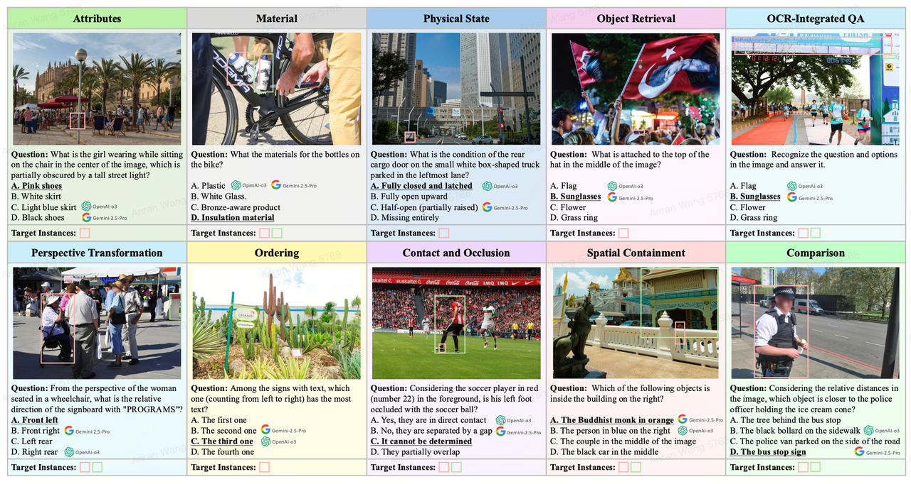
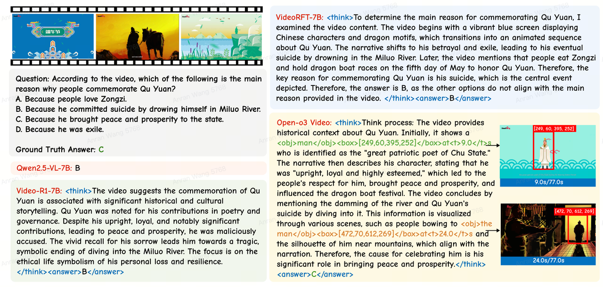
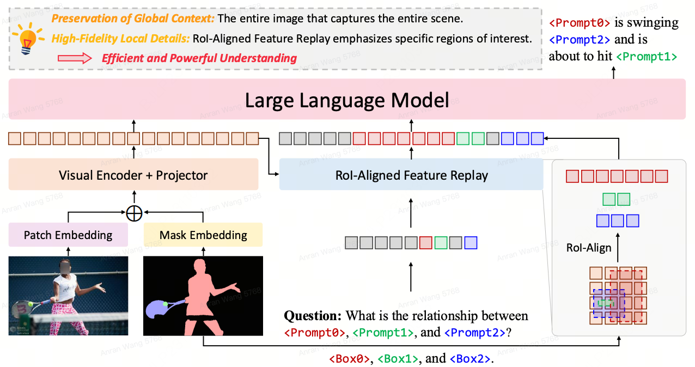
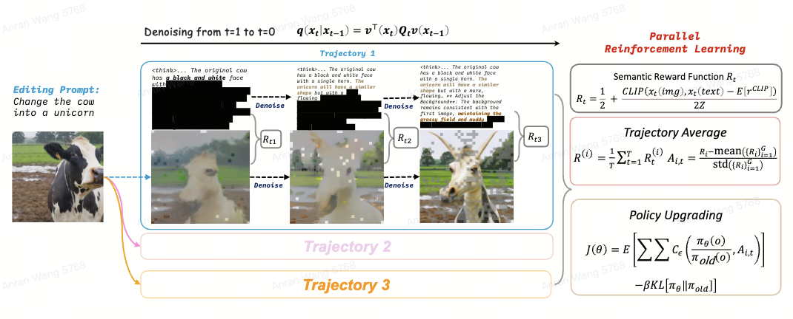

前沿直播 AI 技术研究与落地
xiangtai.li@bytedance.com 我们的愿景
在瞬息万变的直播行业中，大模型相关技术是驱动内容创新、提升用户体验和优化运营效率的核心引擎。LLM Application团队致力于探索最前沿的直播相关技术，并将其转化为能够解决核心业务挑战、创造新增长点的实用解决方案。本页面展示我们当前的前沿研究方向，及其与直播业务的核心场景关联。
主要研究方向
1. 视频理解与推理（Video Understanding and Reasoning）
直播的本质是海量、实时的长视频流。此研究方向的核心是让模型真正“看懂”直播内容。我们通过时空推理（Spatio-temporal Reasoning）、视频图片描述（Image/Video Captionining）和长视频建模 (Long video understanding)等技术，使模型具有对长视频的细粒度理解和推理能力。这方面的工作是实现高质量高光剪辑、深度经营分析、精准AI Summary等直播任务的基石，它能帮助我们自动挖掘直播中最有价值的信息和时刻，真正做到直播内容的理解。
Spatial Visual Reasoning（TreeBench / TreeVGR）
PaperOpenAI-o3 等模型通过动态关联视觉区域开创了视觉接地推理技术，实现了类人 “以图思考” 的能力，但目前缺乏对这类能力进行综合评估的基准测试。为填补这一空白，本项目提出 TreeBench，该诊断性基准基于三大核心原则构建：复杂场景下对细微目标的精准视觉感知、通过边界框评估实现的可追溯证据验证、以及超越简单目标定位、用于测试目标交互与空间层级关系的二阶推理。项目优先选取目标密集型图像，从 SA-1B 数据集初步筛选 1000 张高质量图像，联合 8 位大语言 - 视觉模型（LMM）领域专家为每张图像手动标注问题、候选选项及答案，经三轮质量控制后，最终形成包含 405 个高难度视觉问答对的 TreeBench 基准 —— 即便是最先进的模型在该基准上表现也不佳，无模型准确率突破 60%，例如 OpenAI-o3 的得分仅为 54.87。
此外，项目还提出 TreeVGR（可追溯证据增强型视觉接地推理）训练范式，通过强化学习联合监督目标定位与推理过程，实现精准定位与可解释的推理路径；基于 Qwen2.5-VL-7B 模型初始化后，该范式在 V* Bench、MME-RealWorld 和 TreeBench 三大基准上分别实现 16.8、12.6 和 13.4 个百分点的性能提升，充分证明可追溯性是推动视觉接地推理技术进步的关键。
该项目受o3-like模型的启发，探索"Thinking with videos"技术，提出一个将显式时空证据（spatio-temporal evidence）融入视频推理过程的non-agent框架。与仅生成文字推理过程的传统视频大模型不同，Open-o3 Video 能够在回答问题的的同时，标注关键时间片段、目标对象及其边界框，使推理过程建立在具体可验证的视觉证据之上。为此，项目精心构建了两个高质量数据集：用于监督微调的 STGR-CoT-30k 和用于强化学习的 STGR-RL-36k，它们同时包含时间与空间标注，为模型提供统一的时空监督信号。训练方面，论文设计了冷启动+GSPO强化学习策略，并通过多种奖励机制共同优化答案准确性、推理过程中的时间对齐度和空间精度。在时空推理基准 V-STAR 上，Open-o3 Video 相比 Qwen2.5-VL ，在mAM指标提升了 14.4% ， 在mLGM指标上提升24.2% ，取得当前最优性能；同时在 VideoMME、WorldSense、VideoMMMU 和 TVGBench 等多项视频理解任务中均有提升，维持了模型基本的问答能力。此外，模型生成的显式推理证据还可用于测试时自校准与置信度评估，进一步提高推理可靠性与结果可解释性。
多模态大型语言模型（MLLMs）虽在整体理解方面表现出色，但在处理包含复杂场景的密集型内容时仍存在不足，亟需对精细细节和目标间关系进行细粒度分析。区域级多模态大型语言模型为此提供了可行方向，但以往尝试多针对单个给定区域进行孤立优化，忽略了关键的全局语境。为解决这一问题，本项目提出 “任意区域捕捉（GAR）” 方法，以实现全面的区域级视觉理解。该方法借助高效的感兴趣区域（RoI）对齐特征重放技术，具备三大核心优势：一是融合必要全局语G»境实现精准感知，二是对多个提示词之间的交互进行建模，三是在此基础上自然达成高级组合推理，能够针对任意区域回答特定的自由形式问题，推动范式从被动描述向主动对话转变。此外，项目构建了 GAR-Bench 基准数据集，不仅能更精准地评估单区域理解能力，更重要的是可衡量多区域间的交互及复杂推理表现。大量实验表明，GAR-1B 模型不仅保持了当前最优的图像描述能力（如在 DLC-Bench 基准上超越 DAM-3B 模型 4.5 个百分点），还在多提示词关系建模方面展现出卓越的理解能力，甚至在 GAR-Bench-VQA 基准上超过 InternVL3-78B 模型；更值得关注的是，零样本设置下的 GAR-8B 模型在 VideoRefer-Bench-Q 基准上，性能优于领域内训练的 VideoRefer-7B 模型，证明其强大能力可轻松迁移至视频领域。
2. 高效 VLM/LLM（Efficient VLM/LLM）
大模型技术的规模化落地，关键在于成本和效率。直播作为高并发的C端业务，对模型的推理成本和响应速度极为敏感。此方向的研究（如Diffusion VLM）直指规模化落地的核心痛点。我们正通过模型架构和推理范式的创新，研发“高质量且轻量级”的VLM/LLM，以确保AI Summary、高光剪辑、个性化礼物/背景生成等功能在赋能全量用户时，具备经济可行性。
Diffusion VLM
目前，基于离散扩散模型的大语言模型是一个前沿的探索方向，其本质是一个类似于 Bert 的多轮迭代 Mask 预测器。Gemini Diffusion， Seed Diffusion 等商业产品证明了它在超高速生成上的潜力。目前，开源模型中，已经有能够匹配同等参数规模的自回归大模型性能的成功实践，并且能够实现在同样的推理设置下 2～3倍的输出效率。
基于此，我们正在训练内部的 Diffusion VLM，旨在达到最快推理的 VLM 业务实践。例如 Caption 等实际直播业务，理论速度上能够达到同等 Qwen 模型的 2～3倍加速。且未来具有更广泛的加速方案和前景。
3. 一体化模型（Unified Model）
体化模型是我们面向未来的战略性技术布局，旨在打破“理解”与“生成”的边界。通过探索Unified Model架构，打造既能深刻理解直播间内容，又能创作新内容（AIGC）的模型，使得生成内容更符合直播场景的应用要求。这项研究将直接赋能下一代互动体验，如AI个性化礼物、UGC智能背景等创新功能。
Unified Generation & Understanding Benchmark（Parallel Interleave Generation）
PaperUnified models 相比专有的模型，一个独特点是其能够同时生成两种模态内容的能力。这种能力的一个具体体现是在 thinking-aware 的图像生成/编辑上。模型先进行 CoT 再进行生成，标志性的方法是 Bagel。本工作首先对这种能力进行了一个全方位 的评估，发现在部分 case 上，这种引入了思考的图像生成方法反而比不思考的生成方式效果下降。通过观察，发现主要原因是在于生成的文本内容可能引入了注意力偏差，串行的生成过程又容易带来误差累计。因此，本文提出了一种基于离散扩散模型的并行生成方法，能够同时对文本和图片进行去噪生产，让文本和图像在去噪过程中充分互相感知，增加文本和图像的生成准确度。在此基础上，引入了并行强化学习算法，沿去噪轨迹对生成的图文一致性进行奖励，相比只针对去噪结果的强化学习算法进一步提升。实验证明在我们提出的 Benchmark 以及其他通用的生成 Benchmark 上，该范式能够超越串行生成的范式，同时如果结合最先进的离散扩散模型，能够超过 Bagel 的 thinking-aware 生成能力。
PairUni：Pairwise Training for Unified Multimodal LMs
Paper现有的 unified model 在 RL 训练阶段常常出现生成能力提升和理解能力提升产生冲突的情况，但对于一个 unified model 而言，我们希望模型能准确理解输入的信息的同时做好生成的效果，而非只针对其某一能力做单侧的提升。已有部分工作去探索 “理解如何促进生成，生成如何促进理解” 这一课题，我们也希望理解和生成是相互促进的，但切入点是先研究 “为何理解和生成较难一致性提升？”。
通过对 RL 阶段理解生成数据的分布及训练阶段的 gradient 分析，发现可以优化数据生产和训练框架以达到协同提升的效果（分别提出 PairUG-16k 数据 和 PairGPRO 强化学习框架），该结论在不同架构的 unified models 上均得到了验证（Janus && Lumina-DiMOO），且超过专门训练的理解 or 生成模型的 RL 表现。